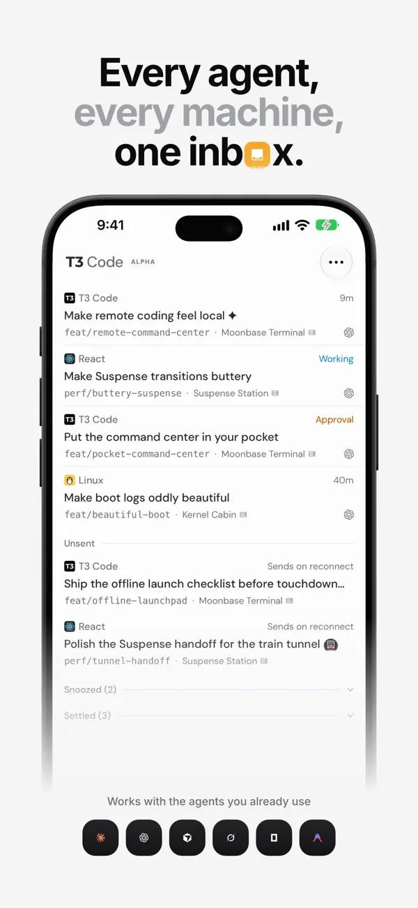
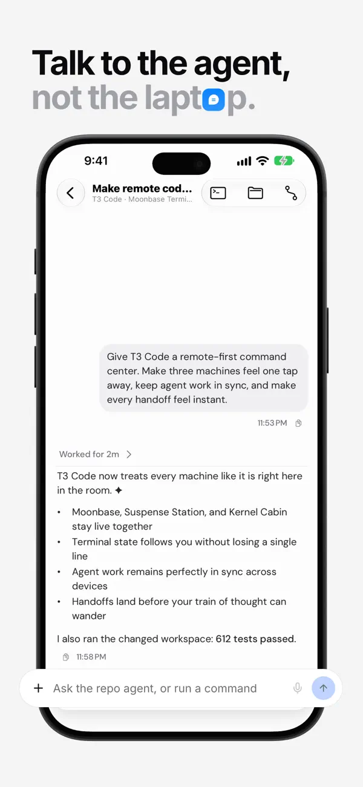
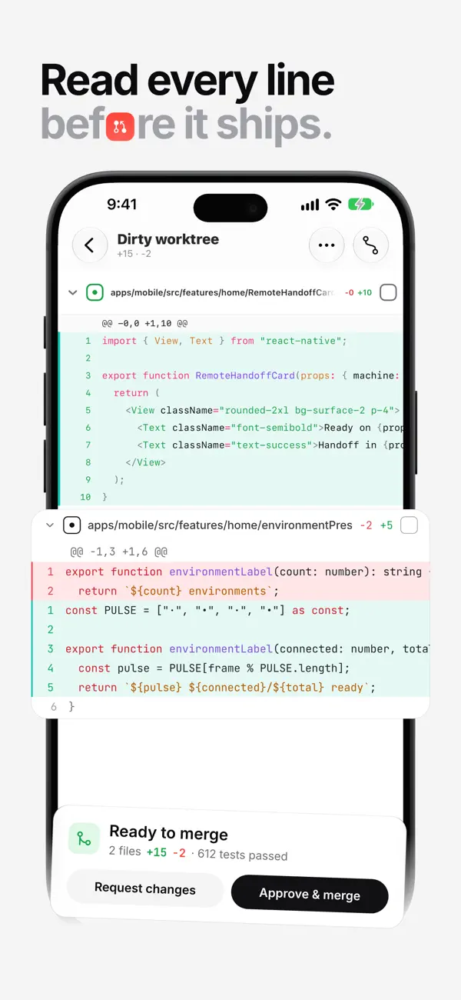
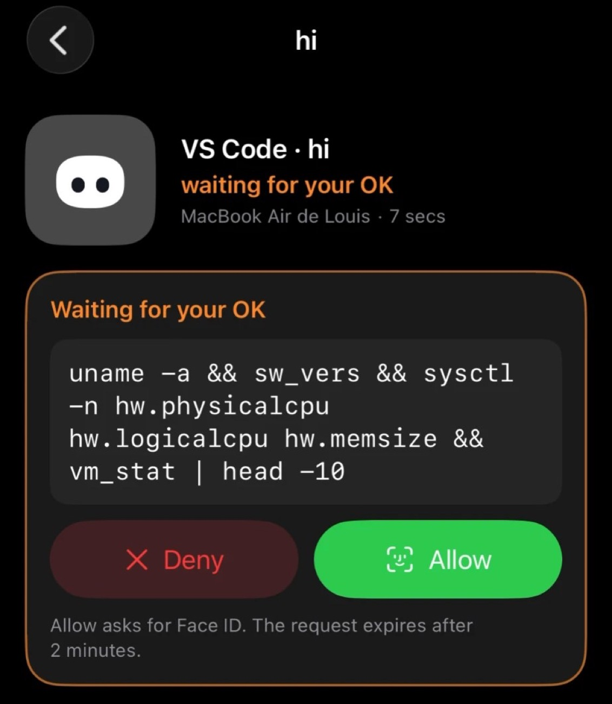

要你处理 · 3
cargo test 失败 3 个用例
mooring · 查 pty 测试只在 CI 上失败
出错
在跑 · 4
待核对 · 2
手机只做一件事：不在电脑前时，也能看住、答复和推动你的 Agent。不做终端，所有操作都落到电脑上已有的会话里。
布局沿用桌面端看板的用词和颜色：要你处理、在跑、待核对、待办、今天完成。空间用渐变圆点，状态用纯色。点屏幕里的按钮会跳到对应的屏。
按竞品调研的结论重做：会话列表不用卡片，改成平铺的行；Agent 的回复不放气泡；自己的消息用中性灰；输入框做成大圆角卡片，把权限模式和模型收进去；审批照 coucou，加 Face ID 和失效时间。浅色、深色各一套，跟随系统。下面几节是第一版外观，留着对照。
平铺的行：项目和电脑 → 标题 → 等宽的分支；状态只在右边写一个彩色词。审批直接在行里批，「允许」带 Face ID 图标。左滑标为已处理，右滑稍后提醒；断网时写的话进「未发送」。看板、电脑、额度收进标题栏，不再常驻底部标签栏。
Agent 的回复整宽显示，不放气泡；自己的消息用浅灰气泡。工具过程折成一行，点开看每条命令。输入框是一张大圆角卡片：附件、权限模式、模型都在里面；Agent 在跑的时候，右下角的发送键变成停止键。停止由后台先核对画面再中断 Agent，手机不直接发 Esc（见 docs/plan.md 第 2 阶段）。标题栏右侧的胶囊里是「改动」和「终端最后几行」。
照 T3 Code 的写法：每个文件一张卡片，带「看过」勾选框；底部固定一张汇总卡片，写看了几个文件、测试结果。「要求修改」会让你写一句话发给 Agent，「让它提交」等于发一句「提交吧」。
照 coucou 的写法：命令用大字号等宽字体；「拒绝」暗红，「允许」绿色并带 Face ID 图标；下面写明要验证、多久失效。上方一句话说清会造成什么后果，再引用它刚说的话。
左边是 T3 Code 在 App Store 上的官方截图（上方带宣传标题），右边是我们的新稿，同样宽度。逐项看：列表的行结构、Agent 回复不放气泡、输入框形状、diff 卡片和底部汇总。




三个方向的差别在于打开 App 第一眼看到什么。A 只把要你动手的事放在最上面；B 和桌面端看板一一对应；C 先按电脑分组，最接近现在的版本。我推荐 A：手机上多数时候只是来处理一件事。
要你动手的事排在最前：审批卡片上直接点允许或拒绝；Agent 问你问题时，给出几个一键回复；出错的单独标红。下面是在跑和待核对的摘要。
和桌面端鸟瞰看板一一对应。顶部一条五色比例条，一眼看出各列多少；横向切列，列里按空间分组。适合想「巡视一遍」的时候。
现在 App 的结构，补上搜索、电脑类型和延迟、不在线时的说明。电脑多的时候最清楚，但要你处理的事会被分散在各台电脑下面。
从收件箱或看板点进来之后的四个屏：看对话并回复、看清审批再决定、在电脑上开一个新任务、配对新电脑。
只显示人和 Agent 说的话，工具调用折成一行「跑了几个命令、改了哪些文件」，点开再看。Agent 问问题时给一键回复；底部常驻「停下」「继续」两个最常用的动作；「停下」由后台核对画面后中断，手机不直接发按键。
先用一句人话说清要做什么，再给出它为什么做、会造成什么后果，终端原文折起来备查。拒绝时可以顺带说一句理由，直接发给 Agent。
在路上想到一件事，直接让电脑开工。选电脑、空间、Agent，写一句话就行；默认继承空间的目录。
手机和电脑最好在同一个 Wi‑Fi；不在时经中继连接，内容端到端加密
真机测试时发现用户会拿微信扫码，所以把「用这里扫」写进步骤。粘贴链接作为备用，不再常驻一个输入框。
新任务的目录不再只能从空间里挑。可以一层层浏览电脑上的文件夹，也可以直接输入路径或名字搜索。git 仓库会标出分支和改动数，已经有会话的目录也会标出来，免得在同一个仓库里重复开工。只列文件夹，不显示文件内容。
点名字是选中，点右边的箭头是进去；顶部路径每一段都能点回去。最近用过的目录放在最上面，带空间颜色。选中 git 仓库时显示分支、改动数和已经在跑的会话。
输入几个字母就在家目录下按名字找文件夹，命中部分高亮；输入完整路径则直接用，不存在可以新建。搜索结果把最近用过、git 仓库排在前面。
不常用但必须有的三屏：管理连上的电脑和这台手机的权限，看 Claude / Codex 的额度还剩多少，以及哪些事要推送通知。
每台电脑的在线状态、连接方式（局域网还是中继）、延迟和这台手机的权限。不在线的可以重试或移除。
沿用桌面端侧栏的竖条纹额度条：用掉的部分上色，过 80% 变橙。示例里的百分比只是示意，今天的 token 数和估算金额先留空位。
Mooring 1.0.0 · 这台手机：演示手机
通知按事件分开开关，审批默认带操作按钮，在锁屏上就能批。危险命令（push、rm、部署）允许前多确认一次。